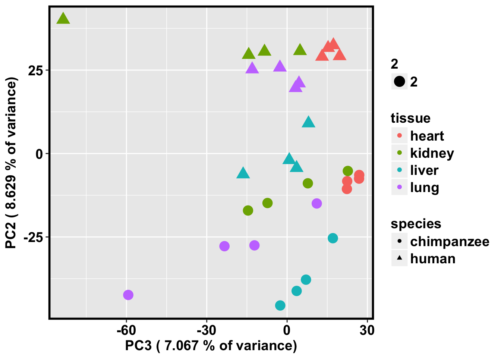

Hg19_PanTro3_TSS
Lauren Blake
September 27, 2017
- How many genes have TSS annotations that are able to be Lifted over?
- Find the RefSeq TSS annotation that is closest to the first orthologous exon from Ran’s file
- Find TSS closest to the first orthologous exon when more than 1 TSS for an orthologous gene
- Compare human and chimp distances
- Filter by max. distance and take off X chromosome
- Obtain the TSS annotations for the 3 genomes
- How many orthologous CpGs are within a 250bp window of the TSS?
- Find the orthologous CpGs in each range
- Subset each of the species so that there is only genes with at least 2 CpGs
- Find the CpGs for the genes with at least 2 orthologous CpGs in it (not necessarily the same CpGs, we will take care of this in the next step)
- For each gene, find the endpoints (same orthologous CpGs) for each of the genes
- Make species specific bedfiles of CpGs that we need to pull
- Run liftover with the correct endpoints
- Take the average methylation level over each gene and run PCA
- Find the average size of the region
- Take the average methylation level over each gene and run PCA
- Find the average size of the region
The goal of this script is to find orthologous TSSs between humans and chimps.
How many genes have TSS annotations that are able to be Lifted over?
# Load library
library(ggplot2)Warning: package 'ggplot2' was built under R version 3.2.5# Load data
# TSSs of 12K RNA-seq genes
tss_11131_hg19ToPanTro3 <- read.delim("../data/tss_11131_hg19ToPanTro3.bed", header=FALSE, stringsAsFactors = FALSE)
genes_in_RNAseq_and_TSS <- read.delim("../data/refGene_hg19_TSS_11131.bed", header=FALSE, stringsAsFactors = FALSE)
# Load plotting function
bjp<- theme(panel.border = element_rect(colour = "black", fill = NA, size = 2),
plot.title = element_text(size = 16, face = "bold", hjust = 0.5),
axis.text.y = element_text(size = 14,face = "bold",color = "black"),
axis.text.x = element_text(size = 14,face = "bold",color = "black"),
axis.title.y = element_text(size = 14,face = "bold"),
axis.title.x = element_text(size = 14,face = "bold"),
legend.text = element_text(size = 14,face = "bold"),
legend.title = element_text(size = 14,face = "bold"),
strip.text.x = element_text(size = 14,face = "bold"),
strip.text.y = element_text(size = 14,face = "bold"),
strip.background = element_rect(colour = "black", size = 2))genes_in_RNAseq_and_TSS_orthologous <- as.data.frame(intersect(tss_11131_hg19ToPanTro3[,4], genes_in_RNAseq_and_TSS[,4]))
# Humans
inshared_lists <- genes_in_RNAseq_and_TSS[,4] %in% genes_in_RNAseq_and_TSS_orthologous[,1]
inshared_lists_data <- as.data.frame(inshared_lists)
counts_genes_in <- cbind( genes_in_RNAseq_and_TSS, inshared_lists_data)
counts_genes_in_cutoff_pre <- subset(counts_genes_in, inshared_lists_data == "TRUE")
genes_in_RNAseq_TSS_orth_human <- counts_genes_in_cutoff_pre[,1:6]
length(unique(genes_in_RNAseq_TSS_orth_human$V5))[1] 10511dim(genes_in_RNAseq_TSS_orth_human)[1] 21107 6# Chimps
inshared_lists <- tss_11131_hg19ToPanTro3[,4] %in% genes_in_RNAseq_and_TSS_orthologous[,1]
inshared_lists_data <- as.data.frame(inshared_lists)
counts_genes_in <- cbind(tss_11131_hg19ToPanTro3, inshared_lists_data)
counts_genes_in_cutoff_pre <- subset(counts_genes_in, inshared_lists_data == "TRUE")
genes_in_RNAseq_TSS_orth_chimp <- counts_genes_in_cutoff_pre[,1:6]
length(unique(genes_in_RNAseq_TSS_orth_chimp$V5))[1] 10511dim(genes_in_RNAseq_TSS_orth_chimp)[1] 21107 6# Intersect the two files
human_chimp <- merge(genes_in_RNAseq_TSS_orth_human, genes_in_RNAseq_TSS_orth_chimp, by = c("V4"))
sort.human <- plyr::arrange(genes_in_RNAseq_TSS_orth_human, V5)
sort.chimp <- plyr::arrange(genes_in_RNAseq_TSS_orth_chimp, V5)
# Some have different MN numbers at the same site. Get rid of those
anno <- paste(as.character(human_chimp[,2]), human_chimp[,3], sep = ":")
human_chimp_rhesus_anno <- cbind(human_chimp, anno)
human_chimp_rhesus_anno <- as.data.frame(human_chimp_rhesus_anno, stringsAsFactors = FALSE)
human_chimp_rhesus_anno_rm <- human_chimp_rhesus_anno[!duplicated(human_chimp_rhesus_anno$anno),]
length(unique(human_chimp_rhesus_anno_rm$V5.x))[1] 10491# Separate into human and chimps
human_anno <- human_chimp_rhesus_anno_rm[,1:6]
chimp_genes <- c(1, 7:11)
chimp_anno <- human_chimp_rhesus_anno_rm[,chimp_genes]There are 10,491 unique genes. Some have multiple TSSs.
Find the RefSeq TSS annotation that is closest to the first orthologous exon from Ran’s file
library("dplyr")Warning: package 'dplyr' was built under R version 3.2.5
Attaching package: 'dplyr'The following objects are masked from 'package:stats':
filter, lagThe following objects are masked from 'package:base':
intersect, setdiff, setequal, unionlibrary("plyr")Warning: package 'plyr' was built under R version 3.2.5-------------------------------------------------------------------------You have loaded plyr after dplyr - this is likely to cause problems.
If you need functions from both plyr and dplyr, please load plyr first, then dplyr:
library(plyr); library(dplyr)-------------------------------------------------------------------------
Attaching package: 'plyr'The following objects are masked from 'package:dplyr':
arrange, count, desc, failwith, id, mutate, rename, summarise,
summarizeENSG_freq_table <- count(human_chimp_rhesus_anno_rm$V5.x)
solo_ENSG_freq_table <- ENSG_freq_table[which(ENSG_freq_table[,2] == 1), ]
nrow(solo_ENSG_freq_table)[1] 8487freq_mult_TSS <- ENSG_freq_table[which(ENSG_freq_table[,2] >= 2), ]
nrow(freq_mult_TSS[which(freq_mult_TSS[,2] == 2), ])[1] 1419nrow(freq_mult_TSS[which(freq_mult_TSS[,2] == 3), ])[1] 397nrow(freq_mult_TSS[which(freq_mult_TSS[,2] == 4), ])[1] 127nrow(freq_mult_TSS[which(freq_mult_TSS[,2] == 5), ])[1] 28nrow(freq_mult_TSS[which(freq_mult_TSS[,2] >= 6), ])[1] 338487 genes have 1 TSS 1419 genes have 2 TSS 397 genes have 3 TSS 127 genes have 4 TSS 28 genes have 5 TSS 33 genes have >5 TSS
Get information for the genes with only 1 TSS that could be LiftedOver
# Get all meta exons
metaOrthoExonTrios <- read.delim("../data/metaOrthoExonTrios.0.92.0.96.wExonEnsID.wSymbols.txt", header=FALSE)
# For humans
solo_ENSG_freq_table <- as.data.frame(solo_ENSG_freq_table[,1])
inshared_lists = human_anno$V5.x %in% solo_ENSG_freq_table[,1]
inshared_lists_data <- as.data.frame(inshared_lists)
counts_genes_in <- cbind(human_anno, inshared_lists_data)
counts_genes_in_mult_TSS <- subset(counts_genes_in, inshared_lists_data == "TRUE")
counts_genes_in_mult_TSS <- counts_genes_in_mult_TSS[,1:6]
sort.human.multiple.TSS <- plyr::arrange(counts_genes_in_mult_TSS, V5.x)
# Find the 1st orthologous exon for each gene in humans
# Now, I want to remake this but with the value of exon #1
uniq_plus <- c(2,3,4,5,7,11,15,16)
# Make data frame for humans
non_uniq_ENSG_gene_names <- as.data.frame(unique(metaOrthoExonTrios[,uniq_plus], incomparables = FALSE))
# Subset so you only have ortho exon #1 for humans
uniq_ENSG_gene_names <- non_uniq_ENSG_gene_names[which(non_uniq_ENSG_gene_names$V3 == 1),]
uniq_ENSG_gene_names <- uniq_ENSG_gene_names[,-2]
uniq_ENSG_gene_names[,1] <- as.character(uniq_ENSG_gene_names[,1])
uniq_ENSG_gene_names[,2] <- as.character(uniq_ENSG_gene_names[,2])
uniq_ENSG_gene_names[,3] <- as.integer(uniq_ENSG_gene_names[,3])
uniq_ENSG_gene_names[,5] <- as.character(uniq_ENSG_gene_names[,5])
uniq_ENSG_gene_names[,6] <- as.character(uniq_ENSG_gene_names[,6])
uniq_ENSG_gene_names[,7] <- as.character(uniq_ENSG_gene_names[,7])
colnames(uniq_ENSG_gene_names) <- c("ENSG", "chr", "First_exon_start_human", "H_strand", "C_strand", "R_strand", "Gene")
# Combine the TSS site with the first ortho exon
TSS_orth_exon_human = merge(sort.human.multiple.TSS, uniq_ENSG_gene_names, by.x = "V5.x", by.y = "Gene")
length(unique(TSS_orth_exon_human$V5))[1] 8487# Take the difference between the TSS annotation and the first exon
diff_TSS_orth_exon_human <- abs(TSS_orth_exon_human$V2 - TSS_orth_exon_human$First_exon_start_human)
TSS_orth_exon_dist_human <- cbind(TSS_orth_exon_human, diff_TSS_orth_exon_human)
# Sort out the TSSs in this file that have multiple NMs for the same TSS
one_TSS_orth_exon_dist_human <- TSS_orth_exon_dist_human[!duplicated(TSS_orth_exon_dist_human$V2),]
nrow(one_TSS_orth_exon_dist_human)[1] 8486# Chimp
inshared_lists = chimp_anno$V5.y %in% solo_ENSG_freq_table[,1]
inshared_lists_data <- as.data.frame(inshared_lists)
counts_genes_in <- cbind(chimp_anno, inshared_lists_data)
counts_genes_in_mult_TSS <- subset(counts_genes_in, inshared_lists_data == "TRUE")
counts_genes_in_mult_TSS <- counts_genes_in_mult_TSS[,1:6]
dim(counts_genes_in_mult_TSS)[1] 8487 6length(unique(counts_genes_in_mult_TSS$V5))[1] 8487sort.chimp.multiple.TSS <- plyr::arrange(counts_genes_in_mult_TSS, V5.y)
# Find the 1st orthologous exon for each gene in humans
# Now, I want to remake this but with the value of exon #1
uniq_plus <- c(2,3,4,9,7,11,15,16)
# Make data frame for humans
non_uniq_ENSG_gene_names <- as.data.frame(unique(metaOrthoExonTrios[,uniq_plus], incomparables = FALSE))
# Subset so you only have ortho exon #1 for humans
uniq_ENSG_gene_names <- non_uniq_ENSG_gene_names[which(non_uniq_ENSG_gene_names$V3 == 1),]
uniq_ENSG_gene_names <- uniq_ENSG_gene_names[,-2]
uniq_ENSG_gene_names[,1] <- as.character(uniq_ENSG_gene_names[,1])
uniq_ENSG_gene_names[,2] <- as.character(uniq_ENSG_gene_names[,2])
uniq_ENSG_gene_names[,3] <- as.integer(uniq_ENSG_gene_names[,3])
uniq_ENSG_gene_names[,5] <- as.character(uniq_ENSG_gene_names[,5])
uniq_ENSG_gene_names[,6] <- as.character(uniq_ENSG_gene_names[,6])
uniq_ENSG_gene_names[,7] <- as.character(uniq_ENSG_gene_names[,7])
colnames(uniq_ENSG_gene_names) <- c("ENSG", "chr", "First_exon_start_chimp", "H_strand", "C_strand", "R_strand", "Gene")
# Combine the TSS site with the first ortho exon
TSS_orth_exon_chimp = merge(sort.chimp.multiple.TSS, uniq_ENSG_gene_names, by.x = "V5.y", by.y = "Gene")
length(unique(TSS_orth_exon_chimp$V5.y))[1] 8487# Take the difference between the TSS annotation and the first exon
diff_TSS_orth_exon_chimp <- abs(TSS_orth_exon_chimp$V2 - TSS_orth_exon_chimp$First_exon_start_chimp)
TSS_orth_exon_dist_chimp <- cbind(TSS_orth_exon_chimp, diff_TSS_orth_exon_chimp)
# Sort out the TSSs in this file that have multiple NMs for the same TSS
one_TSS_orth_exon_dist_chimp <- TSS_orth_exon_dist_chimp[!duplicated(TSS_orth_exon_dist_chimp$V2),]
# Merge by NM
# Human and chimp
human_chimp_one_TSS <- merge(one_TSS_orth_exon_dist_human, one_TSS_orth_exon_dist_chimp, by = c("V4"))
# Sort by alphabetical order
human_chimp_rhesus_one_TSS_sorted <- plyr::arrange(human_chimp_one_TSS, V5.x)
# Check if any have >1 entry/gene
check_more_entries <- count(human_chimp_rhesus_one_TSS_sorted$V5.x)
summary(check_more_entries$freq) Min. 1st Qu. Median Mean 3rd Qu. Max.
1 1 1 1 1 1 Find TSS closest to the first orthologous exon when more than 1 TSS for an orthologous gene
# Pull the gene names with multiple TSS
freq_mult_TSS <- as.data.frame(freq_mult_TSS[,1])
nrow(freq_mult_TSS)[1] 2004### Distance from TSS to 1st exon in humans ###############################################################
inshared_lists = human_anno$V5.x %in% freq_mult_TSS[,1]
inshared_lists_data <- as.data.frame(inshared_lists)
counts_genes_in <- cbind(human_anno, inshared_lists_data)
counts_genes_in_mult_TSS <- subset(counts_genes_in, inshared_lists_data == "TRUE")
counts_genes_in_mult_TSS <- counts_genes_in_mult_TSS[,1:6]
dim(counts_genes_in_mult_TSS)[1] 4904 6length(unique(counts_genes_in_mult_TSS$V5))[1] 2004sort.human.multiple.TSS <- plyr::arrange(counts_genes_in_mult_TSS, V5.x)
nrow(sort.human.multiple.TSS)[1] 4904# Find the 1st orthologous exon for each gene in humans
# Now, I want to remake this but with the value of exon #1
uniq_plus <- c(2,3,4,5,7,11,15,16)
# Make data frame for humans
non_uniq_ENSG_gene_names <- as.data.frame(unique(metaOrthoExonTrios[,uniq_plus], incomparables = FALSE))
# Subset so you only have ortho exon #1 for humans
uniq_ENSG_gene_names <- non_uniq_ENSG_gene_names[which(non_uniq_ENSG_gene_names$V3 == 1),]
uniq_ENSG_gene_names <- uniq_ENSG_gene_names[,-2]
uniq_ENSG_gene_names[,1] <- as.character(uniq_ENSG_gene_names[,1])
uniq_ENSG_gene_names[,2] <- as.character(uniq_ENSG_gene_names[,2])
uniq_ENSG_gene_names[,3] <- as.integer(uniq_ENSG_gene_names[,3])
uniq_ENSG_gene_names[,5] <- as.character(uniq_ENSG_gene_names[,5])
uniq_ENSG_gene_names[,6] <- as.character(uniq_ENSG_gene_names[,6])
uniq_ENSG_gene_names[,7] <- as.character(uniq_ENSG_gene_names[,7])
colnames(uniq_ENSG_gene_names) <- c("ENSG", "chr", "First_exon_start_human", "H_strand", "C_strand", "R_strand", "Gene")
# Combine the TSS site with the first ortho exon
TSS_orth_exon_human = merge(sort.human.multiple.TSS, uniq_ENSG_gene_names, by.x = "V5.x", by.y = "Gene")
nrow(TSS_orth_exon_human)[1] 4904length(unique(TSS_orth_exon_human$V5))[1] 2004# Take the difference between the TSS annotation and the first exon
diff_TSS_orth_exon_human <- abs(TSS_orth_exon_human$V2 - TSS_orth_exon_human$First_exon_start_human)
TSS_orth_exon_dist_human <- cbind(TSS_orth_exon_human, diff_TSS_orth_exon_human)
# Sort out the TSSs in this file that have multiple NMs for the same TSS
sort_TSS_orth_exon_dist_human <- TSS_orth_exon_dist_human[!duplicated(TSS_orth_exon_dist_human$V4),]
nrow(sort_TSS_orth_exon_dist_human)[1] 4902### Distance from TSS to 1st exon in chimps ###############################################################
inshared_lists = chimp_anno$V5.y %in% freq_mult_TSS[,1]
inshared_lists_data <- as.data.frame(inshared_lists)
counts_genes_in <- cbind(chimp_anno, inshared_lists_data)
counts_genes_in_mult_TSS <- subset(counts_genes_in, inshared_lists_data == "TRUE")
counts_genes_in_mult_TSS <- counts_genes_in_mult_TSS[,1:6]
dim(counts_genes_in_mult_TSS)[1] 4904 6length(unique(counts_genes_in_mult_TSS$V5))[1] 2004sort.chimp.multiple.TSS <- plyr::arrange(counts_genes_in_mult_TSS, V5.y)
# Find the 1st orthologous exon for each gene in humans
# Now, I want to remake this but with the value of exon #1
uniq_plus <- c(2,3,4,9,7,11,15,16)
# Make data frame for humans
non_uniq_ENSG_gene_names <- as.data.frame(unique(metaOrthoExonTrios[,uniq_plus], incomparables = FALSE))
# Subset so you only have ortho exon #1 for humans
uniq_ENSG_gene_names <- non_uniq_ENSG_gene_names[which(non_uniq_ENSG_gene_names$V3 == 1),]
uniq_ENSG_gene_names <- uniq_ENSG_gene_names[,-2]
uniq_ENSG_gene_names[,1] <- as.character(uniq_ENSG_gene_names[,1])
uniq_ENSG_gene_names[,2] <- as.character(uniq_ENSG_gene_names[,2])
uniq_ENSG_gene_names[,3] <- as.integer(uniq_ENSG_gene_names[,3])
uniq_ENSG_gene_names[,5] <- as.character(uniq_ENSG_gene_names[,5])
uniq_ENSG_gene_names[,6] <- as.character(uniq_ENSG_gene_names[,6])
uniq_ENSG_gene_names[,7] <- as.character(uniq_ENSG_gene_names[,7])
colnames(uniq_ENSG_gene_names) <- c("ENSG", "chr", "First_exon_start_chimp", "H_strand", "C_strand", "R_strand", "Gene")
# Combine the TSS site with the first ortho exon
TSS_orth_exon_chimp = merge(sort.chimp.multiple.TSS, uniq_ENSG_gene_names, by.x = "V5.y", by.y = "Gene")
length(unique(TSS_orth_exon_chimp$V5))[1] 2004# Take the difference between the TSS annotation and the first exon
diff_TSS_orth_exon_chimp <- abs(TSS_orth_exon_chimp$V2 - TSS_orth_exon_chimp$First_exon_start_chimp)
TSS_orth_exon_dist_chimp <- cbind(TSS_orth_exon_chimp, diff_TSS_orth_exon_chimp)
# Sort out the TSSs in this file that have multiple NMs for the same TSS
sort_TSS_orth_exon_dist_chimp <- TSS_orth_exon_dist_chimp[!duplicated(TSS_orth_exon_dist_chimp$V4),]
nrow(sort_TSS_orth_exon_dist_chimp)[1] 4902# Pick the TSS that minimizes the diff. bet the TSS and the first orthologous exon
# For humans
get_min_set_TSS_human <- sort_TSS_orth_exon_dist_human[as.logical(ave(sort_TSS_orth_exon_dist_human$diff_TSS_orth_exon_human, sort_TSS_orth_exon_dist_human$V5.x, FUN = function(x) x == min(x))),]
count_min_set_human <- count(get_min_set_TSS_human$V5.x)
summary(count_min_set_human) x freq
AADAT : 1 Min. :1.000
AATK : 1 1st Qu.:1.000
ABAT : 1 Median :1.000
ABCA5 : 1 Mean :1.001
ABCC10 : 1 3rd Qu.:1.000
ABCG1 : 1 Max. :2.000
(Other):1998 human_genes_TSS <- count_min_set_human[which(count_min_set_human[,2] > 1), ]
# For chimps
get_min_set_TSS_chimp <- sort_TSS_orth_exon_dist_chimp[as.logical(ave(sort_TSS_orth_exon_dist_chimp$diff_TSS_orth_exon_chimp, sort_TSS_orth_exon_dist_chimp$V5.y, FUN = function(x) x == min(x))),]
#chimp_genes_TSS <- count_min_set_chimp[which(count_min_set_chimp[,2] > 1), ]
chimp_genes_TSS <- get_min_set_TSS_chimp[which(get_min_set_TSS_chimp[,2] > 1), ]
# SGSM2 and SLC30A7 each have two TSSs remaining per species. Remove them.
# In humans
get_min_set_TSS_human <- get_min_set_TSS_human[!grepl("SGSM2", get_min_set_TSS_human$V5.x),]
get_min_set_TSS_human <- get_min_set_TSS_human[!grepl("SLC30A7", get_min_set_TSS_human$V5.x),]
count_min_set_human <- count(get_min_set_TSS_human$V5.x)
summary(count_min_set_human) x freq
AADAT : 1 Min. :1
AATK : 1 1st Qu.:1
ABAT : 1 Median :1
ABCA5 : 1 Mean :1
ABCC10 : 1 3rd Qu.:1
ABCG1 : 1 Max. :1
(Other):1996 # In chimps
get_min_set_TSS_chimp <- get_min_set_TSS_chimp[!grepl("SGSM2", get_min_set_TSS_chimp$V5.y),]
get_min_set_TSS_chimp <- get_min_set_TSS_chimp[!grepl("SLC30A7", get_min_set_TSS_chimp$V5.y),]
count_min_set_chimp <- count(get_min_set_TSS_chimp$V5.y)
summary(count_min_set_chimp) x freq
AADAT : 1 Min. :1
AATK : 1 1st Qu.:1
ABAT : 1 Median :1
ABCA5 : 1 Mean :1
ABCC10 : 1 3rd Qu.:1
ABCG1 : 1 Max. :1
(Other):1996 # Merge by NM
# Human and chimp
human_chimp_multi_TSS <- merge(get_min_set_TSS_human, get_min_set_TSS_chimp, by = c("V4"))
# Sort by alphabetical order
human_chimp_multi_TSS_sorted <- plyr::arrange(human_chimp_multi_TSS, V5.x)
# Make sure there is no overlap in the gene lists (one TSS and multiple TSSs)
any_overlap_genes <- intersect(human_chimp_rhesus_one_TSS_sorted[,2], human_chimp_multi_TSS_sorted[,2])
any_overlap_genescharacter(0)# Combine the two datasets
human_chimp_TSS <- rbind(human_chimp_rhesus_one_TSS_sorted, human_chimp_multi_TSS_sorted)
dim(human_chimp_TSS)[1] 10454 25We now have TSSs for 10,454 genes
Compare human and chimp distances
human_var <- c(1:7,9,13)
chimp_var <- c(1,14:19,21,25)
check_for_differences <- cbind(human_chimp_TSS[,human_var], human_chimp_TSS[,chimp_var])
dim(check_for_differences)[1] 10454 18# Find the greatest difference
min_diff <- transform(check_for_differences, min = pmin(check_for_differences[,9], check_for_differences[,18]))
max_diff <- transform(min_diff, max = pmax(check_for_differences[,9], check_for_differences[,18]))
# Find the difference between min and max
biggest_difference <- abs(max_diff$max - max_diff$min)
select_genes <- cbind(max_diff, biggest_difference)
nrow(select_genes[which(select_genes$biggest_difference <= 100) , ])[1] 5696nrow(select_genes[which(select_genes$biggest_difference <= 500) , ])[1] 7349nrow(select_genes[which(select_genes$biggest_difference <= 1000) , ])[1] 8364nrow(select_genes[which(select_genes$biggest_difference <= 2000) , ])[1] 9230nrow(select_genes[which(select_genes$biggest_difference <= 2500) , ])[1] 9493nrow(select_genes[which(select_genes$biggest_difference <= 3000) , ])[1] 9661nrow(select_genes[which(select_genes$biggest_difference <= 5000) , ])[1] 10060nrow(select_genes[which(select_genes$biggest_difference <= 10000) , ])[1] 10295nrow(select_genes[which(select_genes$biggest_difference <= 20000) , ])[1] 103589493 genes within 2500 bp (2,000 more genes than in the human-chimp-rhesus comparison)
Number_of_TSS <- c("<100", "<500", "<1000", "<2000", "<2500", "<3000", "<5000", "<10000", "<20000")
Number_of_RefSeq_Genes <- c(5696, 7349, 8364, 9230, 9493, 9661, 10060, 10295, 10358)
TSS_RefSeq_Genes <- as.data.frame(cbind(Number_of_TSS, Number_of_RefSeq_Genes), stringsAsFactors = F)
TSS_RefSeq_Genes$Number_of_RefSeq_Genes <- as.numeric(TSS_RefSeq_Genes$Number_of_RefSeq_Genes)
TSS_RefSeq_Genes$Number_of_TSS <- factor(TSS_RefSeq_Genes$Number_of_TSS, levels = c("<100", "<500", "<1000", "<2000", "<2500", "<3000", "<5000", "<10000", "<20000"))
ggplot(TSS_RefSeq_Genes, aes(Number_of_TSS, Number_of_RefSeq_Genes)) + geom_point() + bjp + ggtitle("Difference between each species' distance between TSS and 1st orthologous exon for each of the 10454 RefSeq Genes") + xlab("Difference between each species' distance between TSS and 1st orthologous exon") + ylab("Number of RefSeq Genes")Filter by max. distance and take off X chromosome
# Take only genes that have max_dist < 2500 bp
summary(select_genes$biggest_difference) Min. 1st Qu. Median Mean 3rd Qu. Max.
0 0 44 362800 685 169000000 select_genes_2500 <- select_genes[which(biggest_difference <= 2500), ]
dim(select_genes_2500)[1] 9493 21# Take out any genes on the X chromosome
select_genes_2500_no_X <- select_genes_2500[which(select_genes_2500$V1.x != "chrX"), ]
dim(select_genes_2500_no_X)[1] 9230 21# Make select_genes_2500_no_X a file
#write.table(select_genes_2500_no_X,file="../data/chimp_human_select_genes_2500_no_X.txt",sep="\t", col.names = F, row.names = F, quote = F)
# Read table
#select_genes_2500_no_X <- read.delim("../data/chimp_human_select_genes_2500_no_X.txt", header = FALSE)9230 genes
Obtain the TSS annotations for the 3 genomes
# Human TSS for 9,230 genes
make_bed_human <- cbind.data.frame(select_genes_2500_no_X[,3:6], select_genes_2500_no_X[,2], select_genes_2500_no_X[,7])
make_bed_human[,1] <- as.character(make_bed_human[,1])
make_bed_human[,2] <- as.integer(make_bed_human[,2])
make_bed_human[,3] <- as.integer(make_bed_human[,3])
make_bed_human[,4] <- as.character(make_bed_human[,4])
make_bed_human[,5] <- as.character(make_bed_human[,5])
make_bed_human[,6] <- as.character(make_bed_human[,6])
# Chimp TSS for 9,230 genes
make_bed_chimp <- cbind.data.frame(select_genes_2500_no_X[,12:15], select_genes_2500_no_X[,11], select_genes_2500_no_X[,16])
make_bed_chimp[,1] <- as.character(make_bed_chimp[,1])
make_bed_chimp[,2] <- as.integer(make_bed_chimp[,2])
make_bed_chimp[,3] <- as.integer(make_bed_chimp[,3])
make_bed_chimp[,4] <- as.character(make_bed_chimp[,4])
make_bed_chimp[,5] <- as.character(make_bed_chimp[,5])
make_bed_chimp[,6] <- as.character(make_bed_chimp[,6])
# How often does the strand of human and chimp match?
match_strand <- (make_bed_human[,4] == make_bed_chimp[,4])
summary(match_strand) Mode FALSE TRUE NA's
logical 819 8411 0 8411/(8411+819)[1] 0.9112676# Save the files
#write.table(make_bed_human, file="../data/chimp_human_refGene_hg19_TSS.bed",sep="\t", col.names = F, row.names = F, quote = F)
#write.table(make_bed_chimp,file="../data/chimp_human_refGene_PanTro3_TSS.bed",sep="\t", col.names = F, row.names = F, quote = F)~91% of human-chimp orthologous TSSs are on the same strand.
How many orthologous CpGs are within a 250bp window of the TSS?
# Load data (if needed)
# make_bed_human <- read.table("../data/chimp_human_refGene_hg19_TSS.bed")
# make_bed_chimp <- read.table("../data/chimp_human_refGene_PanTro3_TSS.bed")
# Load library
library("bedr")Warning: package 'bedr' was built under R version 3.2.5
######################
#### bedr v1.0.3 ####
######################
checking binary availability...
* Checking path for bedtools... PASS
/usr/local/bin/bedtools
* Checking path for bedops... FAIL
* Checking path for tabix... FAIL
tests and examples will be skipped on R CMD check if binaries are missing# Set length from TSS
TSS_upstream <- 250
TSS_downstream <- 250
make_orth_cpg_bounds <- function(make_bed_species){
# Separate into positive and negative strands
make_bed_species_pos <- make_bed_species[which(make_bed_species[,4] == "+"), ]
make_bed_species_neg <- make_bed_species[which(make_bed_species[,4] == "-"), ]
# Boundaries for positive strand
make_bed_species_pos_lower <- make_bed_species_pos[,2] - TSS_upstream
make_bed_species_pos_upper <- make_bed_species_pos[,2] + TSS_downstream
species_pos_bounds <- cbind.data.frame(make_bed_species_pos[,1], make_bed_species_pos_lower, make_bed_species_pos_upper, make_bed_species_pos[,4:5], make_bed_species_pos[,6])
colnames(species_pos_bounds) <- c("chr", "start", "end","strand", "gene", "ENSG")
# Boundaries for negative strand
make_bed_species_neg_lower <- make_bed_species_neg[,2] + TSS_upstream
make_bed_species_neg_upper <- make_bed_species_neg[,2] - TSS_downstream
species_neg_bounds <- cbind.data.frame(make_bed_species_neg[,1], make_bed_species_neg_upper, make_bed_species_neg_lower, make_bed_species_neg[,4:5], make_bed_species_neg[,6])
colnames(species_neg_bounds) <- c("chr", "start", "end", "strand", "gene", "ENSG")
species_bounds <- rbind(species_pos_bounds, species_neg_bounds)
return(species_bounds)
}
human_orth_cpg_bounds <- make_orth_cpg_bounds(make_bed_human)
chimp_orth_cpg_bounds <- make_orth_cpg_bounds(make_bed_chimp)
# Put bounds in alphabetical order based on gene name
human_orth_cpg_bounds_sort <- plyr::arrange(human_orth_cpg_bounds, gene)
chimp_orth_cpg_bounds_sort <- plyr::arrange(chimp_orth_cpg_bounds, gene)
# Make sure the genes are the same
match_strand <- (human_orth_cpg_bounds_sort[,5] == chimp_orth_cpg_bounds_sort[,5])
summary(match_strand) Mode TRUE NA's
logical 9230 0 human_orth_cpg_bounds_sort[,1] <- as.character(human_orth_cpg_bounds_sort[,1])
human_orth_cpg_bounds_sort[,2] <- as.integer(human_orth_cpg_bounds_sort[,2])
human_orth_cpg_bounds_sort[,3] <- as.integer(human_orth_cpg_bounds_sort[,3])
human_250_interval <- bedr.sort.region(human_orth_cpg_bounds_sort, method = "lexicographical", check.chr = FALSE)SORTING
VALIDATE REGIONS
* Checking input type... PASS
Input is in bed format
* Check if index is a string... PASS
* Check index pattern... PASS
* Check for missing values... PASS
* Check for larger start position... PASS.
* Check if zero based... PASS#write.table(human_250_interval, file="../data/chimp_human_250_9230_genes_interval_humans.bed",sep="\t", col.names = F, row.names = F, quote = F)
chimp_orth_cpg_bounds_sort[,1] <- as.character(chimp_orth_cpg_bounds_sort[,1])
chimp_orth_cpg_bounds_sort[,2] <- as.integer(chimp_orth_cpg_bounds_sort[,2])
chimp_orth_cpg_bounds_sort[,3] <- as.integer(chimp_orth_cpg_bounds_sort[,3])
chimp_250_interval <- bedr.sort.region(chimp_orth_cpg_bounds_sort, method = "lexicographical", check.chr = FALSE)SORTING
VALIDATE REGIONS
* Checking input type... PASS
Input is in bed format
* Check if index is a string... PASS
* Check index pattern... PASS
* Check for missing values... PASS
* Check for larger start position... PASS.
* Check if zero based... PASS#write.table(chimp_250_interval, file="../data/chimp_human_250_9230_genes_interval_chimps.bed",sep="\t", col.names = F, row.names = F, quote = F)Find the orthologous CpGs in each range
To get the human-chimp orthologous CpGs,
/mnt/lustre/home/jroux/bin/liftOver hg19_10mil_plus_one.bed /mnt/gluster/home/leblake/Methylation/liftover_real/hg19ToPanTro3.over.chain.gz hg19_to_Pantro3_10mil_plus_one.bed hg19_to_Pantro3_10mil_plus_one.unlifted.bed
# Open human-chimp orth CpGs
# Human data
hg19_10mil <- read.delim("../data/hg19_10mil_plus_one.bed", header=FALSE, stringsAsFactors=FALSE)
# chimp data
hg19_to_Pantro3_10mil <- read.delim("../data/hg19_to_Pantro3_10mil_plus_one.bed", header=FALSE, stringsAsFactors=FALSE)
# Use bedtools to find the intersection for humans
library("bedr")
human_250_interval[,4] <- as.character(human_250_interval[,6])
sort_human_bounds <- bedr.sort.region(human_250_interval, check.chr = TRUE)SORTING
VALIDATE REGIONS
* Check if index is a string... PASS
* Check index pattern... PASS
* Check for missing values... PASS
* Check for larger start position... PASS.
* Check if zero based... PASSsort_human_bounds <- bedr.merge.region(sort_human_bounds)MERGING
VALIDATE REGIONS
* Check if index is a string... PASS
* Check index pattern... PASS
* Check for missing values... PASS
* Check for larger start position... PASS.
* Check if zero based... PASS
* Processing input (1): i
CONVERT TO BED
* Checking input type... PASS
Input is in bed format
bedtools merge -i /var/folders/rf/qrcw6ncj05z1pc_pq9xzw3540000gn/T//RtmpNelh0F/i_45c594639cf.bed -d 0 -c 4 -o collapse
* Collapsing 9230 --> 8815 regions... NOTEcpg_hg19_10mil <- bedr.sort.region(hg19_10mil, check.chr = TRUE)SORTING
VALIDATE REGIONS
* Checking input type... PASS
Input seems to be in bed format but chr/start/end column names are missing
* Check if index is a string... PASS
* Check index pattern... PASS
* Check for missing values... PASS
* Check for larger start position... PASS.
* Check if zero based... PASS
* Overlapping regions can cause unexpected results.human.cpg.int <- bedr(input = list(a = cpg_hg19_10mil, b = sort_human_bounds), method = "intersect", params = "-loj", check.chr=TRUE) * Processing input (1): a
CONVERT TO BED
* Checking input type... PASS
Input seems to be in bed format but chr/start/end column names are missing
VALIDATE REGIONS
* Check if index is a string... PASS
* Check index pattern... PASS
* Check for missing values... PASS
* Check for larger start position... PASS.
* Check if zero based... PASS
* Checking sort order... PASS
* Checking for overlapping 'contiguous' regions... PASS
* Processing input (2): b
CONVERT TO BED
* Checking input type... PASS
Input is in bed format
VALIDATE REGIONS
* Check if index is a string... PASS
* Check index pattern... PASS
* Check for missing values... PASS
* Check for larger start position... PASS.
* Check if zero based... PASS
* Checking sort order... PASS
* Checking for overlapping 'contiguous' regions... PASS
bedtools intersect -a /var/folders/rf/qrcw6ncj05z1pc_pq9xzw3540000gn/T//RtmpNelh0F/a_45c5e8847f1.bed -b /var/folders/rf/qrcw6ncj05z1pc_pq9xzw3540000gn/T//RtmpNelh0F/b_45c468fc3bc.bed -loj#write.table(human.cpg.int, file="../data/chimp_human_hg19_10mil_250_intersection.bed",sep="\t", col.names = F, row.names = F, quote = F)
#human.cpg.int.a.b <- human.cpg.int
# Find the intersection for chimps
chimp_250_interval[,4] <- as.character(chimp_250_interval[,6])
# Need to get rid of the "interval"chr"
chimp_250_interval_check <- gsub("chr", "", chimp_250_interval[,1])
chimp_250_interval[,1] <- chimp_250_interval_check
# Now, we need check.chr = FALSE
sort_chimp_bounds <- bedr.sort.region(chimp_250_interval, check.chr = FALSE)SORTING
VALIDATE REGIONS
* Check if index is a string... PASS
* Check index pattern... PASS
* Check for missing values... PASS
* Check for larger start position... PASS.
* Check if zero based... PASSsort_chimp_bounds <- bedr.merge.region(sort_chimp_bounds, check.chr = FALSE)MERGING
VALIDATE REGIONS
* Check if index is a string... PASS
* Check index pattern... PASS
* Check for missing values... PASS
* Check for larger start position... PASS.
* Check if zero based... PASS
* Processing input (1): i
CONVERT TO BED
* Checking input type... PASS
Input is in bed format
bedtools merge -i /var/folders/rf/qrcw6ncj05z1pc_pq9xzw3540000gn/T//RtmpNelh0F/i_45c8144dfc.bed -d 0 -c 4 -o collapse
* Collapsing 9230 --> 8818 regions... NOTEhg19_to_Pantro3_10mil_check <- gsub("chr", "", hg19_to_Pantro3_10mil[,1])
hg19_to_Pantro3_10mil[,1] <- hg19_to_Pantro3_10mil_check
hg19_to_Pantro3_10mil_sort <- bedr.sort.region(hg19_to_Pantro3_10mil, check.chr = FALSE)SORTING
VALIDATE REGIONS
* Checking input type... PASS
Input seems to be in bed format but chr/start/end column names are missing
* Check if index is a string... PASS
* Check index pattern... PASS
* Check for missing values... PASS
* Check for larger start position... PASS.
* Check if zero based... PASS
* Overlapping regions can cause unexpected results.chimp.cpg.int <- bedr(input = list(a = hg19_to_Pantro3_10mil_sort, b = sort_chimp_bounds), method = "intersect", params = "-loj", check.chr=FALSE) * Processing input (1): a
CONVERT TO BED
* Checking input type... PASS
Input seems to be in bed format but chr/start/end column names are missing
VALIDATE REGIONS
* Check if index is a string... PASS
* Check index pattern... PASS
* Check for missing values... PASS
* Check for larger start position... PASS.
* Check if zero based... PASS
* Checking sort order... PASS
* Checking for overlapping 'contiguous' regions... PASS
* Processing input (2): b
CONVERT TO BED
* Checking input type... PASS
Input is in bed format
VALIDATE REGIONS
* Check if index is a string... PASS
* Check index pattern... PASS
* Check for missing values... PASS
* Check for larger start position... PASS.
* Check if zero based... PASS
* Checking sort order... PASS
* Checking for overlapping 'contiguous' regions... PASS
bedtools intersect -a /var/folders/rf/qrcw6ncj05z1pc_pq9xzw3540000gn/T//RtmpNelh0F/a_45c5dd3c29.bed -b /var/folders/rf/qrcw6ncj05z1pc_pq9xzw3540000gn/T//RtmpNelh0F/b_45c2b0e217.bed -loj#write.table(chimp.cpg.int, file="../data/chimp_human_PanTro3_10mil_250_intersection.bed",sep="\t", col.names = F, row.names = F, quote = F)
#chimp.cpg.int.a.b <- chimp.cpg.intSubset each of the species so that there is only genes with at least 2 CpGs
# Count the number of CpGs/gene
human.cpg.int.near.gene <- count(human.cpg.int$names) # 7654 genes
# Now, we want to get only the ones with 2 CpGs
human.two.cpg.int.near.gene <- human.cpg.int.near.gene[which(human.cpg.int.near.gene$freq >= 2),] #7390 genes
# Count the number of CpGs/gene
chimp.cpg.int.near.gene <- count(chimp.cpg.int$names) # 7639 genes
# Now, we want to get only the ones with 2 CpGs
chimp.two.cpg.int.near.gene <- chimp.cpg.int.near.gene[which(chimp.cpg.int.near.gene$freq >= 2),] #7374 genes
# Get the genes that we have 2 cpgs for
gene_two_cpgs_species <- intersect(human.two.cpg.int.near.gene[,1], chimp.two.cpg.int.near.gene[,1])
gene_two_cpgs_species <- gene_two_cpgs_species[-1]
length(gene_two_cpgs_species) # 7352 genes[1] 7352Find the CpGs for the genes with at least 2 orthologous CpGs in it (not necessarily the same CpGs, we will take care of this in the next step)
# Humans
inshared_lists = human.cpg.int$names %in% gene_two_cpgs_species
inshared_lists_data <- as.data.frame(inshared_lists)
counts_genes_in <- cbind(human.cpg.int, inshared_lists_data)
counts_genes_in_mult_TSS <- subset(counts_genes_in, inshared_lists_data == "TRUE")
human.cpg.intersect_2cpgs <- counts_genes_in_mult_TSS[,1:10]
length(unique(human.cpg.intersect_2cpgs[,10]))[1] 7352# Chimps
inshared_lists = chimp.cpg.int$names %in% gene_two_cpgs_species
inshared_lists_data <- as.data.frame(inshared_lists)
counts_genes_in <- cbind(chimp.cpg.int, inshared_lists_data)
counts_genes_in_mult_TSS <- subset(counts_genes_in, inshared_lists_data == "TRUE")
chimp.cpg.intersect_2cpgs <- counts_genes_in_mult_TSS[,1:10]
length(unique(chimp.cpg.intersect_2cpgs[,10]))[1] 7352For each gene, find the endpoints (same orthologous CpGs) for each of the genes
# Add chr:start position to each dataframe
# Human int
new_human_cpgs <- paste(human.cpg.intersect_2cpgs[,1], sep = ":", human.cpg.intersect_2cpgs[,2])
#new_human_cpgs <- paste("chr", new_human_cpgs, sep = "")
human.cpg.intersect_2cpgs <- cbind(human.cpg.intersect_2cpgs, new_human_cpgs)
# Chimp int
new_chimp_cpgs <- paste(chimp.cpg.intersect_2cpgs[,1], sep = ":", chimp.cpg.intersect_2cpgs[,2])
new_chimp_cpgs <- paste("chr", new_chimp_cpgs, sep = "")
chimp.cpg.intersect_2cpgs <- cbind(chimp.cpg.intersect_2cpgs, new_chimp_cpgs)
# All Human data
hg19_10mil_cpg <- paste(hg19_10mil[,1], sep = ":", hg19_10mil[,2])
# All chimp data
Pantro3_10mil_cpg <- paste(hg19_to_Pantro3_10mil[,1], sep = ":", hg19_to_Pantro3_10mil[,2])
Pantro3_10mil_cpg <- paste("chr", Pantro3_10mil_cpg, sep = "" )
# Combine all human and chimp cpgs
two_genomes_dfCovnoX <- cbind(hg19_10mil_cpg, Pantro3_10mil_cpg)
# Merge human CpGs and chimp Cpgs
chimp.cpg.intersect_2cpgs_with_human <- merge(chimp.cpg.intersect_2cpgs, two_genomes_dfCovnoX, by.x = c("new_chimp_cpgs"), by.y = c("Pantro3_10mil_cpg"))
human_chimp.cpg.intersect_2cpgs <- merge(chimp.cpg.intersect_2cpgs_with_human, human.cpg.intersect_2cpgs, by.x = c("hg19_10mil_cpg"), by.y = c("new_human_cpgs"))
dim(human_chimp.cpg.intersect_2cpgs)[1] 98645 22length(unique(human_chimp.cpg.intersect_2cpgs$names.x)) # still 7352 genes[1] 7352# match(human_chimp.cpg.intersect_2cpgs$names.x == human_chimp.cpg.intersect_2cpgs$names.y)
# Grab the first CpG for each gene
val_first_gene <- human_chimp.cpg.intersect_2cpgs[as.logical(ave(human_chimp.cpg.intersect_2cpgs$V2.x, human_chimp.cpg.intersect_2cpgs$names.x, FUN = function(x) x == min(x))),]
# Grab the last CpG for each gene
val_last_gene <- human_chimp.cpg.intersect_2cpgs[as.logical(ave(human_chimp.cpg.intersect_2cpgs$V2.x, human_chimp.cpg.intersect_2cpgs$names.x, FUN = function(x) x == max(x))),]
# Make sure that you are pulling them for the same genes
summary(val_first_gene[,12] == val_first_gene[,22]) Mode TRUE NA's
logical 7352 0 summary(val_last_gene[,12] == val_last_gene[,22]) Mode TRUE NA's
logical 7352 0 summary(val_first_gene[,12] == val_last_gene[,12]) Mode FALSE TRUE NA's
logical 32 7320 0 val_first_last_gene <- merge(val_first_gene, val_last_gene, by = c("names.x"))
# Separate back into first and last
val_first_gene_sort <- arrange(val_first_gene, val_first_gene$names.x)
val_last_gene_sort <- arrange(val_last_gene, val_last_gene$names.x)
summary(val_first_gene_sort[,12] == val_last_gene_sort[,12]) Mode TRUE NA's
logical 7352 0 summary(val_first_gene_sort[,4] < val_last_gene_sort[,4]) Mode TRUE NA's
logical 7352 0 # Check to make sure no X or Y chromosome
check_chr_val_first_gene_sort <- as.factor(val_first_gene_sort[,13])Make species specific bedfiles of CpGs that we need to pull
# Humans
humans_250 <- as.data.frame(cbind(val_first_gene_sort$V1.y, as.numeric(val_first_gene_sort$V2.y), as.numeric(val_last_gene_sort$V3.y), as.character(val_first_gene_sort$names.y)), stringsAsFactors = FALSE)
humans_250[,2] <- as.integer(humans_250[,2])
humans_250[,3] <- as.integer(humans_250[,3])
colnames(humans_250) <- c("chr", "start", "end", "gene")
dim(humans_250)[1] 7352 4bed_pos_human <- bedr.sort.region(humans_250, method = "lexicographical", check.chr = TRUE)SORTING
VALIDATE REGIONS
* Checking input type... PASS
Input is in bed format
* Check if index is a string... PASS
* Check index pattern... PASS
* Check for missing values... PASS
* Check for larger start position... PASS.
* Check if zero based... PASS
* Overlapping regions can cause unexpected results.# Chimps
chimps_250 <- as.data.frame(cbind(val_first_gene_sort$V1.x, as.numeric(val_first_gene_sort$V2.x), as.numeric(val_last_gene_sort$V3.x), as.character(val_first_gene_sort$names.x)), stringsAsFactors = FALSE)
chimps_250[,2] <- as.integer(chimps_250[,2])
chimps_250[,3] <- as.integer(chimps_250[,3])
colnames(chimps_250) <- c("chr", "start", "end", "gene")
dim(chimps_250)[1] 7352 4bed_pos_chimp <- bedr.sort.region(chimps_250, method = "lexicographical", check.chr = FALSE)SORTING
VALIDATE REGIONS
* Checking input type... PASS
Input is in bed format
* Check if index is a string... PASS
* Check index pattern... PASS
* Check for missing values... PASS
* Check for larger start position... PASS.
* Check if zero based... PASS
* Overlapping regions can cause unexpected results.Run liftover with the correct endpoints
human_int_250 <- bedr(input = list(a = hg19_10mil, b = bed_pos_human), method = "intersect", params = "-wao") * Processing input (1): a
CONVERT TO BED
* Checking input type... PASS
Input seems to be in bed format but chr/start/end column names are missing
VALIDATE REGIONS
* Check if index is a string... PASS
* Check index pattern... PASS
* Check for missing values... PASS
* Check for larger start position... PASS.
* Check if zero based... PASS
* Checking sort order... PASS
* Checking for overlapping 'contiguous' regions... PASS
* Processing input (2): b
CONVERT TO BED
* Checking input type... PASS
Input is in bed format
VALIDATE REGIONS
* Check if index is a string... PASS
* Check index pattern... PASS
* Check for missing values... PASS
* Check for larger start position... PASS.
* Check if zero based... PASS
* Checking sort order... PASS
* Checking for overlapping 'contiguous' regions... PASS
bedtools intersect -a /var/folders/rf/qrcw6ncj05z1pc_pq9xzw3540000gn/T//RtmpNelh0F/a_45c1cfc41d5.bed -b /var/folders/rf/qrcw6ncj05z1pc_pq9xzw3540000gn/T//RtmpNelh0F/b_45c1338b2b7.bed -waoshow <- human_int_250[,8] != -1
matrix_grab <- which(show == TRUE)
matrix_grab_genes <- human_int_250[matrix_grab,]
matrix_grab_250 <- as.data.frame(cbind(matrix_grab, matrix_grab_genes[,1:3], matrix_grab_genes[,10]), stringsAsFactors = FALSE)
length(unique(matrix_grab_250[,5]))[1] 7352#write.table(matrix_grab_250, "../data/chimp_human_250_matrix_grab_250_merged.txt", quote = FALSE)Take the average methylation level over each gene and run PCA
# Read in the data
methyl_250_2cpgs <- read.csv("../data/chimp_human_orth_tab_98k_with_genes.txt", sep="", stringsAsFactors=FALSE)
methyl_250_2cpgs <- methyl_250_2cpgs[,6:38]
# Average over all orthologous CpGs
avg_methylation_multiple_cpgs_per_gene <- array(data = NA, dim = c(7352,32))
for (i in 2:33){
avg_methylation_multiple_cpgs_per_gene[,i-1] <- aggregate(methyl_250_2cpgs[,i] ~ methyl_250_2cpgs[,1], data = methyl_250_2cpgs, mean)[,2]
}
colnames(avg_methylation_multiple_cpgs_per_gene) <- colnames(methyl_250_2cpgs[,2:33])
# Get the gene names
gene_names <- array(data = NA, dim = c(7352,1))
for (i in 2){
gene_names[,i-1] <- aggregate(methyl_250_2cpgs[,i] ~ methyl_250_2cpgs[,1], data = methyl_250_2cpgs, mean)[,1]
}
# Make file with average values and gene names
matrix_methyl <- cbind(avg_methylation_multiple_cpgs_per_gene, gene_names)
#write.table(matrix_methyl, "../data/chimp_human_orth_7352_avg_methyl_per_ts_gene.txt")
# PCA with just the humans and chimps
pca_genes <- prcomp(t(avg_methylation_multiple_cpgs_per_gene), scale = T, center = T)
scores <- pca_genes$x
matrixpca <- pca_genes$x
pc1 <- matrixpca[,1]
pc2 <- matrixpca[,2]
pc3 <- matrixpca[,3]
pc4 <- matrixpca[,4]
pc5 <- matrixpca[,5]
pcs <- data.frame(pc1, pc2, pc3, pc4, pc5)
summary <- summary(pca_genes)
library("ggplot2")
library("RColorBrewer")
library("gplots")Warning: package 'gplots' was built under R version 3.2.4
Attaching package: 'gplots'The following object is masked from 'package:stats':
lowesssamples <- read.csv("../data/Sample_info_RNAseq.csv")
tissue <- samples$Tissue[1:32]
species <- samples$Species[1:32]
# Load colors
colors <- colorRampPalette(c(brewer.pal(9, "Blues")[1],brewer.pal(9, "Blues")[9]))(100)
pal <- c(brewer.pal(9, "Set1"), brewer.pal(8, "Set2"), brewer.pal(12, "Set3"))
# Make PCA
ggplot(data=pcs, aes(x=pc1, y=pc2, color=tissue, shape=species, size=2)) + geom_point(aes(colour = as.factor(tissue))) + bjp + xlab(paste("PC1 (",(summary$importance[2,1]*100), "% of variance)")) + ylab(paste("PC2 (",(summary$importance[2,2]*100), "% of variance)"))ggplot(data=pcs, aes(x=pc3, y=pc2, color=tissue, shape=species, size=2)) + geom_point(aes(colour = as.factor(tissue))) + bjp + xlab(paste("PC3 (",(summary$importance[2,3]*100), "% of variance)")) + ylab(paste("PC2 (",(summary$importance[2,2]*100), "% of variance)"))# Bryan's code for clustering
library(dendextend)Warning: package 'dendextend' was built under R version 3.2.5Warning: replacing previous import by 'magrittr::%>%' when loading
'dendextend'
---------------------
Welcome to dendextend version 1.5.2
Type citation('dendextend') for how to cite the package.
Type browseVignettes(package = 'dendextend') for the package vignette.
The github page is: https://github.com/talgalili/dendextend/
Suggestions and bug-reports can be submitted at: https://github.com/talgalili/dendextend/issues
Or contact: <tal.galili@gmail.com>
To suppress this message use: suppressPackageStartupMessages(library(dendextend))
---------------------
Attaching package: 'dendextend'The following object is masked from 'package:stats':
cutreelibrary(colorspace)Warning: package 'colorspace' was built under R version 3.2.5library(tidyverse)Warning: package 'tidyverse' was built under R version 3.2.5Loading tidyverse: tibble
Loading tidyverse: tidyr
Loading tidyverse: readr
Loading tidyverse: purrrWarning: package 'tibble' was built under R version 3.2.5Warning: package 'tidyr' was built under R version 3.2.5Warning: package 'readr' was built under R version 3.2.5Warning: package 'purrr' was built under R version 3.2.5Conflicts with tidy packages ----------------------------------------------arrange(): dplyr, plyr
compact(): purrr, plyr
count(): dplyr, plyr
failwith(): dplyr, plyr
filter(): dplyr, stats
id(): dplyr, plyr
lag(): dplyr, stats
mutate(): dplyr, plyr
rename(): dplyr, plyr
summarise(): dplyr, plyr
summarize(): dplyr, plyr#Function to make pearson correlation matrix and convert into distance matrix
pearson <- function(x, ...) {
x <- as.matrix(x)
res <- as.dist(1 - cor(x, method = "pearson", use = "everything"))
res <- as.dist(res)
attr(res, "method") <- "pearson"
return(res)
}
cor(avg_methylation_multiple_cpgs_per_gene[,1:32])->all_data
hc <- avg_methylation_multiple_cpgs_per_gene[,1:32] %>% pearson %>% hclust(method="average")
dend <- hc %>% as.dendrogram
heatmap.2(all_data, scale="none", col = colors, margins = c(5, 5), trace='none', denscol="white", Colv=dend,Rowv=dend, ColSideColors=pal[as.integer(as.factor(species))], RowSideColors=pal[as.integer(as.factor(tissue))+9])
Find the average size of the region
# PCA with just the humans and chimps
lungs <- c(4, 8, 12, 16, 20, 24, 28, 32)
pca_genes <- prcomp(t(avg_methylation_multiple_cpgs_per_gene[,-(lungs)]), scale = T, center = T)
scores <- pca_genes$x
matrixpca <- pca_genes$x
pc1 <- matrixpca[,1]
pc2 <- matrixpca[,2]
pc3 <- matrixpca[,3]
pc4 <- matrixpca[,4]
pc5 <- matrixpca[,5]
pcs <- data.frame(pc1, pc2, pc3, pc4, pc5)
summary <- summary(pca_genes)
tissue <- samples$Tissue[1:32]
tissue_no_lungs <- tissue[-lungs]
species <- samples$Species[1:32]
species_no_lungs <- species[-lungs]
# Make PCA
cbPalette <- c("black", "red", "blue")
ggplot(data=pcs, aes(x=pc1, y=pc2, color=tissue_no_lungs, shape=species_no_lungs, size=2)) + xlab(paste("PC1 (",(summary$importance[2,1]*100), "% of variance)")) + ylab(paste("PC2 (",(summary$importance[2,2]*100), "% of variance)")) + geom_point(aes(colour = as.factor(tissue_no_lungs))) + bjp + scale_colour_manual(values=cbPalette) + scale_shape_manual(values=c(17, 15))PCA with the 10 million orthologous CpG sites between humans and chimps
# Load data (PCA)
pcs_10mil <- read.csv("../data/pcs_10mil.txt", sep="")
# Load libraries
library("ggplot2")
library("RColorBrewer")
# Load sample information
samples <- read.csv("../data/Sample_info_RNAseq.csv")
tissue <- samples$Tissue[1:32]
species <- samples$Species[1:32]
# Run PCA
pc1 <- pcs_10mil[,1]
pc2 <- pcs_10mil[,2]
pc3 <- pcs_10mil[,3]
pc4 <- pcs_10mil[,4]
pc5 <- pcs_10mil[,5]
pcs <- data.frame(pc1, pc2, pc3, pc4, pc5)
ggplot(data=pcs, aes(x=pc1, y=pc2, color=tissue, shape=species, size=2)) + geom_point(aes(colour = as.factor(tissue))) + bjp
ggplot(data=pcs, aes(x=pc2, y=pc3, color=tissue, shape=species, size=2)) + geom_point(aes(colour = as.factor(tissue)))Repeat but with the gene regions separated
methyl_250_2cpgs <- read.csv("../data/chimp_human_orth_tab_98k_with_genes.txt", sep="", stringsAsFactors=FALSE)
# Take out the genes on the X chromosome
methyl_250_2cpgs <- methyl_250_2cpgs[!grepl("chrX", methyl_250_2cpgs$V2),]
# Grab CpGs with 1 gene
one_gene_region <- methyl_250_2cpgs[!grepl(",", methyl_250_2cpgs[,6]),]
one_gene_regions_count <- count(one_gene_region[,6])
summary(one_gene_regions_count[,2]) Min. 1st Qu. Median Mean 3rd Qu. Max.
2.00 6.00 12.00 12.86 18.00 42.00 # Grab CpGs with 2 genes
two_gene_regions <- methyl_250_2cpgs[grepl(",", methyl_250_2cpgs[,6]),]
bed_two_gene_regions <- two_gene_regions[,3:5]
colnames(bed_two_gene_regions) <- c("chr", "start", "end")
bed_two_gene_regions <- bedr.sort.region(bed_two_gene_regions, check.chr = TRUE)SORTING
VALIDATE REGIONS
* Checking input type... PASS
Input is in bed format
* Check if index is a string... PASS
* Check index pattern... PASS
* Check for missing values... PASS
* Check for larger start position... PASS.
* Check if zero based... PASS
* Overlapping regions can cause unexpected results.# Try to intersect
sort_human_bounds <- bedr.sort.region(human_250_interval, check.chr = TRUE)SORTING
VALIDATE REGIONS
* Check if index is a string... PASS
* Check index pattern... PASS
* Check for missing values... PASS
* Check for larger start position... PASS.
* Check if zero based... PASShuman.cpg.int <- bedr(input = list(a = bed_two_gene_regions, b = sort_human_bounds), method = "intersect", params = "-wao", check.chr=TRUE) * Processing input (1): a
CONVERT TO BED
* Checking input type... PASS
Input is in bed format
VALIDATE REGIONS
* Check if index is a string... PASS
* Check index pattern... PASS
* Check for missing values... PASS
* Check for larger start position... PASS.
* Check if zero based... PASS
* Checking sort order... PASS
* Checking for overlapping 'contiguous' regions... PASS
* Processing input (2): b
CONVERT TO BED
* Checking input type... PASS
Input is in bed format
VALIDATE REGIONS
* Check if index is a string... PASS
* Check index pattern... PASS
* Check for missing values... PASS
* Check for larger start position... PASS.
* Check if zero based... PASS
* Checking sort order... PASS
* Checking for overlapping 'contiguous' regions... FAIL
The input for object has overlapping features!
This can cause unexpected results for some set operations.
i.e. x <- bedr.merge.region(x)
bedtools intersect -a /var/folders/rf/qrcw6ncj05z1pc_pq9xzw3540000gn/T//RtmpNelh0F/a_45c1b69fbb4.bed -b /var/folders/rf/qrcw6ncj05z1pc_pq9xzw3540000gn/T//RtmpNelh0F/b_45c74561ee5.bed -waotwo_gene_regions_merge <- merge(human.cpg.int, methyl_250_2cpgs, by.x = c("start"), by.y = c("V3"))
clean_up <- c(9, 16:47)
two_gene_regions_merge_to_avg <- two_gene_regions_merge[,clean_up]
two_gene_regions_merge_to_avg <- as.data.frame(two_gene_regions_merge_to_avg)
two_gene_regions_merge_to_avg_sort <- arrange(two_gene_regions_merge_to_avg, two_gene_regions_merge_to_avg$ENSG)
length(unique(two_gene_regions_merge_to_avg_sort$ENSG))[1] 752two_gene_regions_merge_to_avg_count <- count(two_gene_regions_merge_to_avg$ENSG)
summary(two_gene_regions_merge_to_avg_count$freq) Min. 1st Qu. Median Mean 3rd Qu. Max.
1.00 12.00 19.00 18.45 24.00 41.00 two_gene_regions_merge_to_avg_count_sort <- arrange(two_gene_regions_merge_to_avg_count, two_gene_regions_merge_to_avg_count$freq)
# Take out the two genes (PLAGL2 and SIRT3, ENSG00000126003 and ENSG00000142082) with only 1 CpG/gene
two_gene_regions <- two_gene_regions_merge_to_avg_sort[!grepl("ENSG00000126003", two_gene_regions_merge_to_avg_sort$ENSG),]
two_gene_regions_two_cpgs <- two_gene_regions[!grepl("ENSG00000142082", two_gene_regions$ENSG),]
# Find the number of genes
length(unique(one_gene_region[,6]))[1] 6975length(unique(two_gene_regions_two_cpgs$ENSG))[1] 750one_gene_region_methyl <- one_gene_region[,6:38]
colnames(one_gene_region_methyl) <- colnames(two_gene_regions_two_cpgs)
all_genes_methyl <- rbind(one_gene_region_methyl, two_gene_regions_two_cpgs)
length(unique(all_genes_methyl$ENSG))[1] 7725Take the average methylation level over each gene and run PCA
# Rename so you can reuse code
methyl_250_2cpgs <- all_genes_methyl
# Average over all orthologous CpGs
avg_methylation_multiple_cpgs_per_gene <- array(data = NA, dim = c(7725,32))
for (i in 2:33){
avg_methylation_multiple_cpgs_per_gene[,i-1] <- aggregate(methyl_250_2cpgs[,i] ~ methyl_250_2cpgs[,1], data = methyl_250_2cpgs, mean)[,2]
}
colnames(avg_methylation_multiple_cpgs_per_gene) <- colnames(methyl_250_2cpgs[,2:33])
# Get the gene names
gene_names <- array(data = NA, dim = c(7725,1))
for (i in 2){
gene_names[,i-1] <- aggregate(methyl_250_2cpgs[,i] ~ methyl_250_2cpgs[,1], data = methyl_250_2cpgs, mean)[,1]
}
# Make file with average values and gene names
matrix_methyl <- cbind(avg_methylation_multiple_cpgs_per_gene, gene_names)
#write.table(matrix_methyl, "../data/chimp_human_orth_7725_avg_methyl_per_ts_gene.txt")
# PCA with just the humans and chimps
pca_genes <- prcomp(t(avg_methylation_multiple_cpgs_per_gene), scale = T)
scores <- pca_genes$x
matrixpca <- pca_genes$x
pc1 <- matrixpca[,1]
pc2 <- matrixpca[,2]
pc3 <- matrixpca[,3]
pc4 <- matrixpca[,4]
pc5 <- matrixpca[,5]
pcs <- data.frame(pc1, pc2, pc3, pc4, pc5)
summary <- summary(pca_genes)
samples <- read.csv("../data/Sample_info_RNAseq.csv")
tissue <- samples$Tissue[1:32]
species <- samples$Species[1:32]
# Load colors
colors <- colorRampPalette(c(brewer.pal(9, "Blues")[1],brewer.pal(9, "Blues")[9]))(100)
pal <- c(brewer.pal(9, "Set1"), brewer.pal(8, "Set2"), brewer.pal(12, "Set3"))
# Make PCA
ggplot(data=pcs, aes(x=pc1, y=pc2, color=tissue, shape=species, size=2)) + geom_point(aes(colour = as.factor(tissue))) + bjp + xlab(paste("PC1 (",(summary$importance[2,1]*100), "% of variance)")) + ylab(paste("PC2 (",(summary$importance[2,2]*100), "% of variance)"))ggplot(data=pcs, aes(x=pc3, y=pc2, color=tissue, shape=species, size=2)) + geom_point(aes(colour = as.factor(tissue))) + bjp + xlab(paste("PC3 (",(summary$importance[2,3]*100), "% of variance)")) + ylab(paste("PC2 (",(summary$importance[2,2]*100), "% of variance)"))
# Bryan's code for clustering
library(dendextend)
library(colorspace)
library(tidyverse)
#Function to make pearson correlation matrix and convert into distance matrix
pearson <- function(x, ...) {
x <- as.matrix(x)
res <- as.dist(1 - cor(x, method = "pearson", use = "everything"))
res <- as.dist(res)
attr(res, "method") <- "pearson"
return(res)
}
cor(avg_methylation_multiple_cpgs_per_gene[,1:32])->all_data
hc <- avg_methylation_multiple_cpgs_per_gene[,1:32] %>% pearson %>% hclust(method="average")
dend <- hc %>% as.dendrogram
heatmap.2(all_data, scale="none", col = colors, margins = c(5, 5), trace='none', denscol="white", Colv=dend,Rowv=dend, ColSideColors=pal[as.integer(as.factor(species))], RowSideColors=pal[as.integer(as.factor(tissue))+9])Find the average size of the region
# PCA with just the humans and chimps
lungs <- c(4, 8, 12, 16, 20, 24, 28, 32)
pca_genes <- prcomp(t(avg_methylation_multiple_cpgs_per_gene[,-(lungs)]), scale = T, center = T)
scores <- pca_genes$x
matrixpca <- pca_genes$x
pc1 <- matrixpca[,1]
pc2 <- matrixpca[,2]
pc3 <- matrixpca[,3]
pc4 <- matrixpca[,4]
pc5 <- matrixpca[,5]
pcs <- data.frame(pc1, pc2, pc3, pc4, pc5)
summary <- summary(pca_genes)
tissue <- samples$Tissue[1:32]
tissue_no_lungs <- tissue[-lungs]
species <- samples$Species[1:32]
species_no_lungs <- species[-lungs]
# Make PCA
cbPalette <- c("black", "red", "blue")
ggplot(data=pcs, aes(x=pc1, y=pc2, color=tissue_no_lungs, shape=species_no_lungs, size=2)) + xlab(paste("PC1 (",(summary$importance[2,1]*100), "% of variance)")) + ylab(paste("PC2 (",(summary$importance[2,2]*100), "% of variance)")) + geom_point(aes(colour = as.factor(tissue_no_lungs))) + bjp + scale_colour_manual(values=cbPalette) + scale_shape_manual(values=c(17, 15))PCA with the 10 million orthologous CpG sites between humans and chimps
# Load data (PCA)
pcs_10mil <- read.csv("../data/pcs_10mil.txt", sep="")
# Load libraries
library("ggplot2")
library("RColorBrewer")
# Load sample information
samples <- read.csv("../data/Sample_info_RNAseq.csv")
tissue <- samples$Tissue[1:32]
species <- samples$Species[1:32]
# Run PCA
pc1 <- pcs_10mil[,1]
pc2 <- pcs_10mil[,2]
pc3 <- pcs_10mil[,3]
pc4 <- pcs_10mil[,4]
pc5 <- pcs_10mil[,5]
pcs <- data.frame(pc1, pc2, pc3, pc4, pc5)
ggplot(data=pcs, aes(x=pc1, y=pc2, color=tissue, shape=species, size=2)) + geom_point(aes(colour = as.factor(tissue))) + bjpggplot(data=pcs, aes(x=pc2, y=pc3, color=tissue, shape=species, size=2)) + geom_point(aes(colour = as.factor(tissue)))